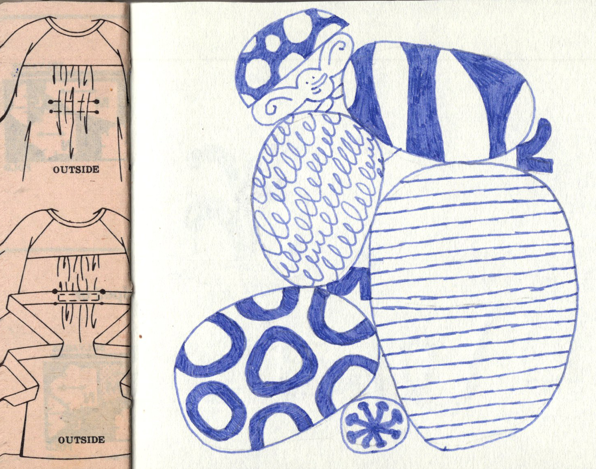
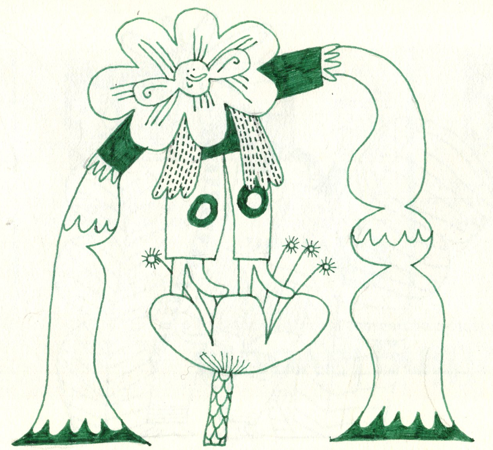

forest goblins company
an ongoing collection of drawings.
Goblins are my tiny forest friends I met when I was very small. Now I can hardly see them under the mushrooms. I draw them so I don’t forget what they look like.
Section subtitle
Paragraph 2